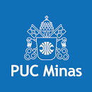

|  | Home | Quem somos | Contato |
Quem somosConsiderada uma das melhores universidades privadas do Brasil – é a única instituição privada de Minas Gerais a fazer parte do ranking das melhores universidades do mundo: o Times Higher Education e eleita por seis vezes pelo Guia do Estudante, publicação da Editora Abril, como a melhor entre as particulares do país - a PUC Minas é reconhecida pela Congregação para a Educação Católica, do Vaticano, como a maior universidade católica do mundo, abrigando mais de 85 mil alunos em cursos de graduação e pós-graduação. A Instituição mantém corpo docente permanente de 1,5 mil professores e 2,6 mil funcionários.
5 motivos para estudar conosco
ObjetivosPor que estudar na PUC? UMA DAS MELHORES UNIVERSIDADES DO PAÍS E DAS AMÉRICAS Somos a melhor universidade privada do Sul do País, pela terceira vez consecutiva 2017, 2018, 2019 e também como a segunda melhor entre as instituições de ensino superior IES privadas de todo o País, segundo o MEC. |
|